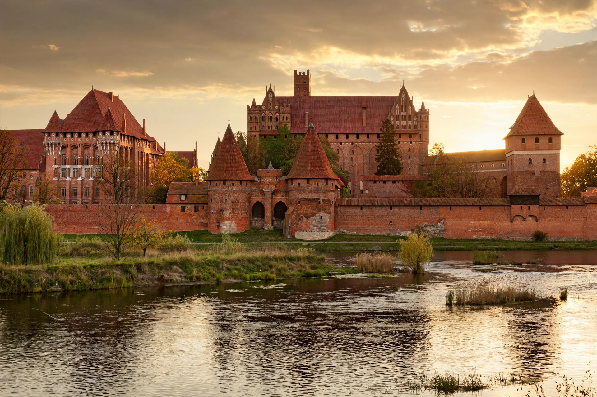

| Malbork | |
| Country | Poland |
|---|---|
| Voivodeship | Pomeranian |
| Population | About 37,000 |
| Landmark | Malbork Castle — UNESCO World Heritage Site (1997) |
Malbork (German: Marienburg) is a town in northern Poland, in the Pomeranian Voivodeship, situated on the Nogat river in the Vistula delta region of Żuławy. It is best known for Malbork Castle, the largest castle in the world measured by land area and a UNESCO World Heritage Site, built by the German Teutonic Order as the fortress-monastery of Marienburg.

The Teutonic Knights began building the castle in the later 13th century (from about 1274–1280) beside an earlier stronghold; in 1309 the Grand Master of the Order transferred his seat there from Venice, making Malbork the capital of the Order's Prussian state. The castle survived a siege after the Polish-Lithuanian victory at the Battle of Grunwald in 1410, but during the Thirteen Years' War the Order, unable to pay its Bohemian mercenaries, handed them the castle in lieu of wages; in 1457 the mercenaries sold it to King Casimir IV of Poland. Under the Second Peace of Thorn (1466) Malbork became part of Royal Prussia within the Polish Crown, and the castle served as a Polish royal residence and starosty seat.
In the First Partition of Poland (1772) the town passed to Prussia as Marienburg in West Prussia. It remained German until 1945; heavy fighting in the Second World War destroyed much of the town and badly damaged the castle. After the war Malbork was transferred to Poland and its German population expelled. The castle was extensively reconstructed and now houses the Castle Museum (Muzeum Zamkowe), founded in 1961.
The castle complex consists of three fortified sections — the High, Middle and Lower Castles — enclosed by defensive walls and moats, and covers some 21 hectares. It is the largest brick building complex in Europe and a masterpiece of medieval military architecture. Designated a UNESCO World Heritage Site in 1997, it hosts the annual Siege of Malbork festival re-enacting the events of 1410. Malbork is also an important railway junction and food-processing centre.
Malbork Castle · Teutonic Order · Battle of Grunwald · Gdańsk